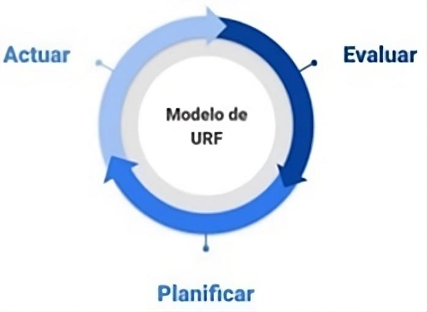
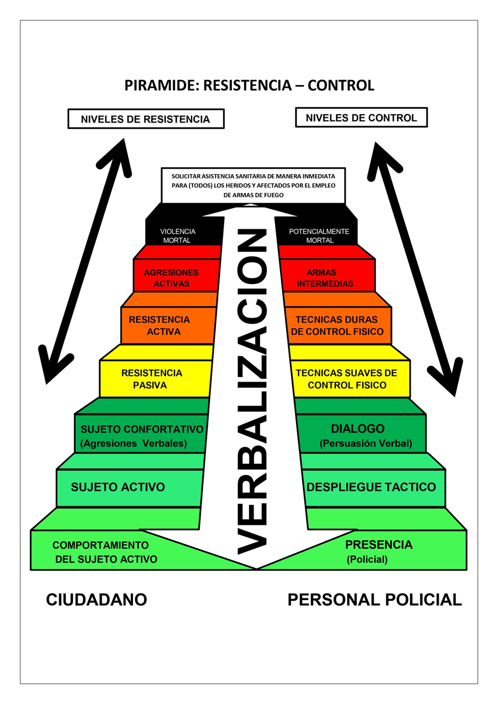

Material original · Clase 02
Taller Integral para la construcción del Rol Policial ProfesionalClase 2
INSTITUTO SUPERIOR DE FORMACIÓN TÉCNICA N°6.005.
CARRERA: Tecnicatura Superior en Seguridad Pública.
CURSO: Nivel II.
CICLO LECTIVO: 2026.
MATERIA: Taller Integral para la Construcción del Rol Policial Profesional.
REFERENTE: Luis Alejandro Pintos
RÉGIMEN DE CURSADA: Anual.
ITINERARIO DE CLASE: N° 2.
TIPO DE CLASE: Teórica.
Contenidos de la Clase:
Modelo Operativo del Uso Racional de la Fuerza.- Pirámide: Resistencia – Control
Tema de la Clase:
Niveles de URF en la Intervención Policial
Niveles de URF que Deben Considerarse en la Intervención Policial
EVALÚO-PLANIFICO-ACTÚO.
Pirámide (Resistencia – Control), gráfica con las posibles escaladas en los distintos niveles del URF y la utilización de la fuerza de manera proporcional a la situación, de acuerdo con los principios de legalidad y proporcionalidad
Continuaremos con el repaso general iniciado la clase anterior
Finalidad de la clase:
Que los cursantes realicen una lectura del material propuesto para esta clase, con la finalidad de que logren asimilar los temas trabajados en las unidades Operaciones Policiales y Prácticas Profesionalizantes II, como así también el marco legal del uso racional de la fuerza a fin de poder apropiarse de estos para su accionar policial.
Introducción de la Clase:
En esta Clase proponemos realizar una lectura comprensiva del material propuesto para esta semana donde trabajaremos: Niveles de URF en la Intervención Policial – Los Niveles de URF que Deben Considerarse en la Intervención Policial – La Técnica EVALÚO-PLANIFICO-ACTÚO Se adjunta la Pirámide (Resistencia – Control) gráfica con las posibles escaladas en los distintos niveles del URF y la utilización de la fuerza de manera proporcional a la situación, de acuerdo con los principios de legalidad y proporcionalidad.La misma tiene como finalidad ayudar a comprender gráficamente el URF.-
También sugerimos que lean el material teórico aportado por las unidades de Operaciones Policiales y Prácticas Profesionalizantes II.-
Desarrollo de la Clase
MODELO OPERATIVO DEL USO RACIONAL DE LA FUERZA
La intervención policial es la consecuencia de la capacidad profesional de las/los funcionarios policiales en ejercicio de su labor, es decir su competencia profesional. Para ello, resulta fundamental la preparación táctica y el entrenamiento en técnicas, ya que ambas le permitirán dominar y posicionarse —a partir de la construcción de criterios profesionales que guíen su accionar— en dos dimensiones claves: la evaluación de las circunstancias y el contexto de actuación y la planificación de las acciones que implican esa decisión.
Toda intervención policial debe estar planificada, ajustada y desarrollada a partir de criterios profesionales y procedimientos operativos, como así también a los principios del modelo del uso racional de la fuerza (URF).
NIVELES DE URF EN LA INTERVENCIÓN POLICIAL
La intervención policial, entendida desde el modelo del URF, propone diferentes niveles de fuerza a utilizar, los cuales van desde la mera presencia policial hasta el uso de la fuerza potencialmente letal. Cada nivel implica una serie de técnicas y herramientas específicas que pueden variar en virtud del tipo de objetivos perseguidos y las características y rasgos principales de la intervención.
La fuerza debe ser entendida como un medio que el personal policial utiliza con la finalidad de controlar —de manera legítima— una situación que atenta contra el orden público.
Es importante recalcar que cuando nos referimos a la «utilización de la fuerza» no hablamos, necesariamente, de un acto de violencia, ya que la fuerza policial se ejerce en distintas escalas, las cuales van desde la mera presencia policial hasta el uso del arma de fuego.
Teniendo en cuenta que cada nivel representa un aumento en la intensidad de la fuerza ejercida y que los mismos pueden utilizarse tanto en escala ascendente como descendente, lo esperable sería que, una vez controlada la situación —con la certeza de que las condiciones de seguridad estén dadas—, pueda reducirse el nivel de fuerza que se esté empleando, reflejando de ese modo el principio de razonabilidad de la intervención.
Debemos recordar que en algunas ocasiones, con un mínimo nivel de fuerza y por medios no coactivos, podremos neutralizar la situación y conjurar el delito.
La facultad de recurrir al empleo de un nivel elevado de fuerza —cuando otros medios resultan insuficientes o ineficaces—, lleva consigo la gran responsabilidad de velar para que el mismo se ejerza en forma lícita y eficazmente, ya que su utilización excesiva afecta directamente los derechos humanos.
NIVELES DE URF QUE DEBEN CONSIDERARSE EN LA INTERVENCIÓN POLICIAL
Comunicación: acompaña de manera permanente todo el accionar policial, ya que nunca deja de realizarse. Cuando nos referimos a la misma, hablamos de la verbal, la no verbal y/o gestual, a los elementos paraverbales y a la escrita. Toda comunicación por parte del personal policial deberá tender a desescalar el nivel de violencia, para ello, es necesario desarrollar competencias comunicativas, utilizando los mejores términos y descartando por completo los que no aporten a conseguir el objetivo buscado.
Presencia policial: el personal policial debe encontrarse en estado de alerta durante el tiempo que dure su servicio. ¿Qué entendemos por estar alerta? Estar consciente de todo lo que pasa a su alrededor evitando distracciones. La prestancia y el porte son cuestiones importantes. La mirada franca, que no es lo mismo que amenazante, es fundamental para desalentar, en principio, cualquier intento de delito.
Sistema de defensa: son todas aquellas técnicas en donde no medie ningún elemento entre el personal policial y el Sujeto Activo (SA). También podemos llamarlas técnicas de contacto a mano limpia, en donde no empleamos nada más que nuestras propias manos. Utilizaremos este escalón de uso de la fuerza cuando el SA tenga un comportamiento de resistencia activa. Por ejemplo, cuando debamos realizar el arresto de un SA que se resista con empujones o golpes de puño, entre otros. Lo importante aquí es que el SA no utilice ningún elemento más que su cuerpo para resistirse.
Sistema de reducción: todas aquellas técnicas en donde medie un elemento entre el SA y el personal policial. Por ejemplo, la utilización del bastón tonfa policial y las esposas, entre otros. Utilizaremos estas técnicas cuando el SA tenga un comportamiento de agresión no letal, como por ejemplo un palo o arroje elementos contundentes.
Uso de arma potencialmente letal: este es el último escalón del modelo de uso racional de la fuerza. Por lo tanto, debe ser utilizado con mucha precaución. Aquí interviene la aplicación del arma de fuego, ya sea un arma de puño o un arma larga; cuando llegamos a este punto, el comportamiento del SA ya es potencialmente letal. Aquí debemos tener en claro que el objetivo del personal policial es neutralizar la agresión, no matar.
Teniendo en cuenta todo lo expuesto consideramos que es primordial:
SOLICITAR ASISTENCIA SANITARIA DE MANERA INMEDIATA PARA (TODOS) LOS HERIDOS Y AFECTADOS POR EL EMPLEO DE ARMAS DE FUEGO
EVALÚO-PLANIFICO-ACTÚO
El modelo de URF en la intervención policial no es lineal, sino que se corresponde con una idea de tipo circular en donde cada instancia es la continuación de otra la cual, a su vez, incide en ella y la reconfigura. Esto refleja las características de naturaleza dinámica que presentan las situaciones conflictivas ante las que puede enfrentarse el personal quien deberá evaluar y planificar de manera constante cuáles son las alternativas posibles, conforme a la situación en la que tenga que intervenir, para poder elegir cuál será el nivel de URF más adecuado para su accionar.
El accionar policial debe estar dirigido a generar el desescalamiento o la disminución de los niveles de resistencia y agresividad. Su proceder debe respetar, en todo momento, los parámetros legales establecidos para la legítima defensa —propia o de terceros— y los derechos humanos de las personas presentes.
La intervención, en tanto toma de decisión, es el resultado de la secuencia evaluar/planificar/actuar (EPA) que se retroalimenta de manera continua.

EVALUAR: esta acción —la cual tiene que ir acompañando en modo constante al desencadenamiento de los hechos— debe ser permanente, continua, sistemática y dinámica para que el personal pueda construir un juicio cuya finalidad es la de establecer el valor, la importancia y el significado de la situación que ha requerido de su intervención.
En este proceso se deberán tomar en consideración las normas de carácter ético-jurídico y se han de tener en cuenta tres factores que inciden sobre el desarrollo de una situación: el escenario, las consideraciones tácticas y la conducta del SA a fin de llevar adelante una intervención apropiada.
PLANIFICAR: esta acción implica elaborar o establecer un plan que se ha de desarrollar en la intervención del personal policial, considerando el nivel de intensidad de la fuerza a aplicar para lograr los fines deseados, así como los medios, recursos disponibles y procedimientos operativos para seleccionar el camino que considere más apropiado y más ajustado a los requerimientos de la situación. La clave de este proceso es la evaluación dinámica, continua y sistemática que lleva a cabo el personal policial para que su accionar sea acorde a los principios del URF.
ACTUAR: esta acción requiere que en el accionar, el personal policial pueda tomar decisiones acertadas —las cuales muchas veces deberán darse en tiempos escasos, bajo presiones e intentando proteger la vida de todas las personas conforme a la ley—. Se debe considerar que toda intervención está condicionada por el techo operativo, es decir, por la capacidad para resolver el evento o intentar hacerlo. Esto puede deberse a la especificidad, el nivel de riesgo, la complejidad o la magnitud del evento, por la cantidad de sujetos activos, el marco jurídico o los aspectos técnicos.
ES IMPORTANTE QUE EL/LA EFECTIVO POLICIAL RECONOZCA SU TECHO OPERATIVO Y ACTÚE CONFORME A SU CRITERIO PROFESIONAL.
Por lo tanto, teniendo en cuenta todo lo expuesto y trabajado al momento, te proponemos una Pirámide (Pirámide: Resistencia – Control), donde de manera gráfica observaremos las posibles escaladas en los distintos niveles del uso racional de la fuerza (URF) y la utilización de la fuerza de manera proporcional a la situación, de acuerdo con los principios de legalidad y proporcionalidad.-
